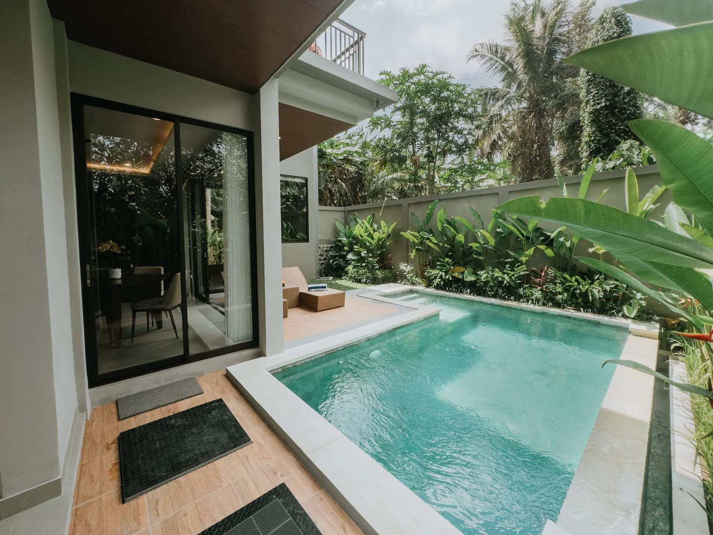
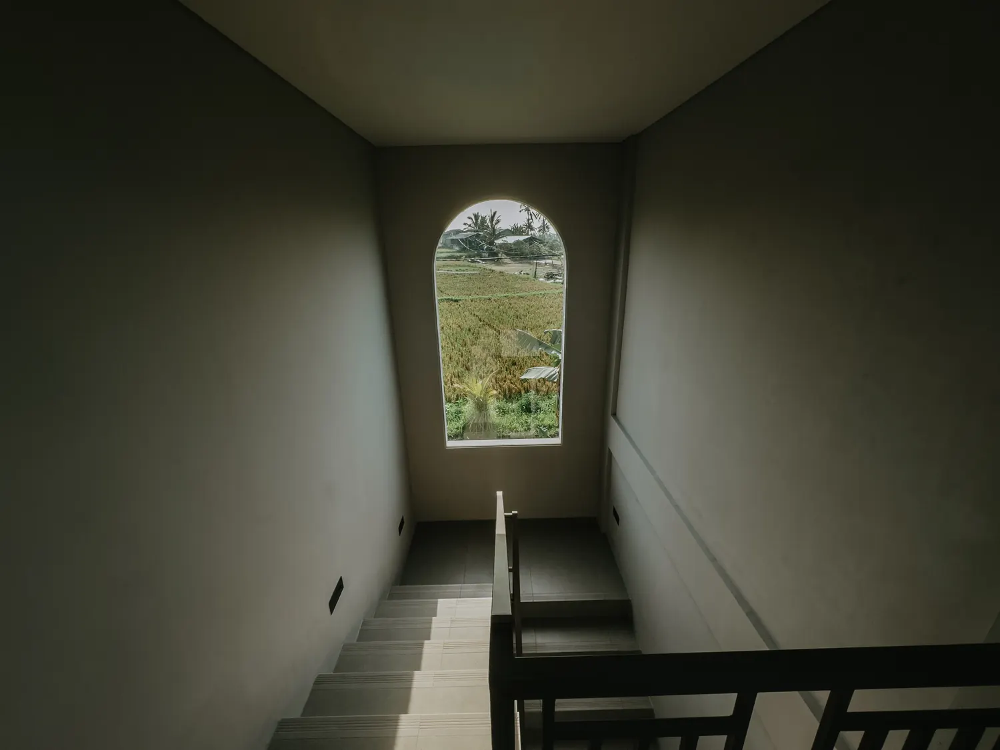
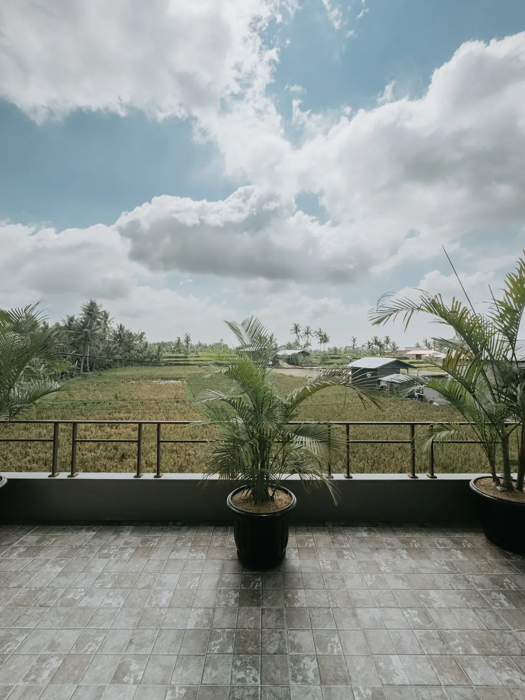
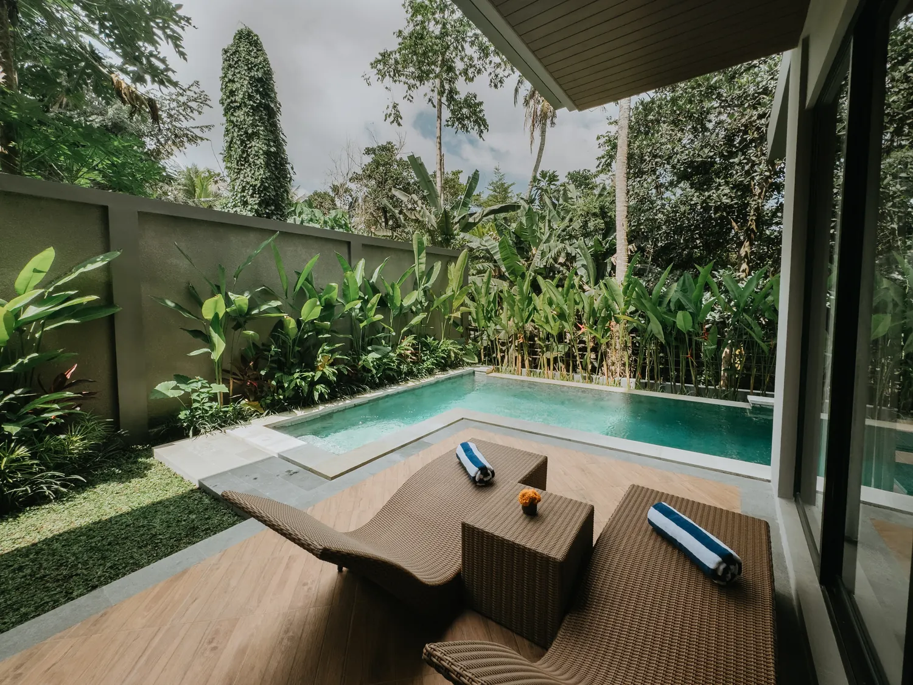
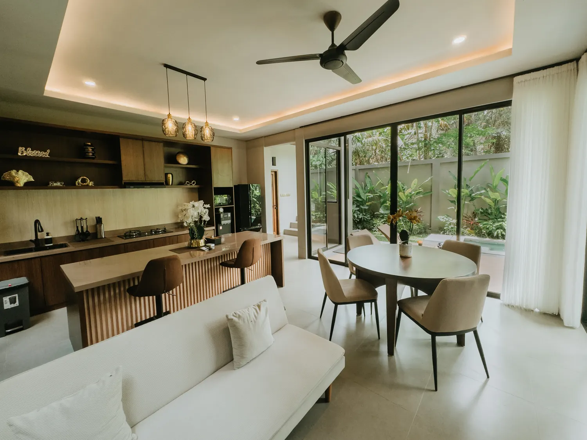
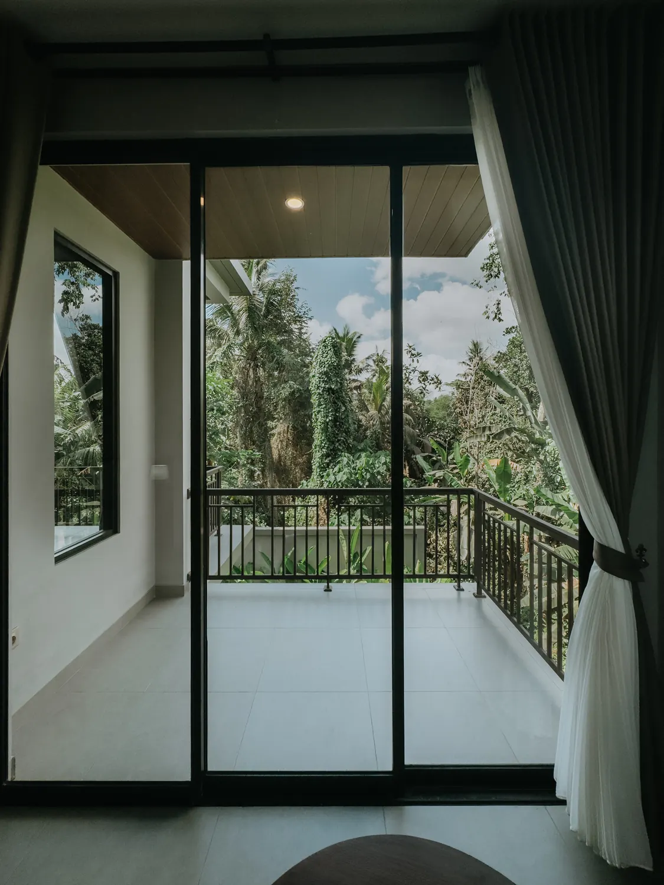
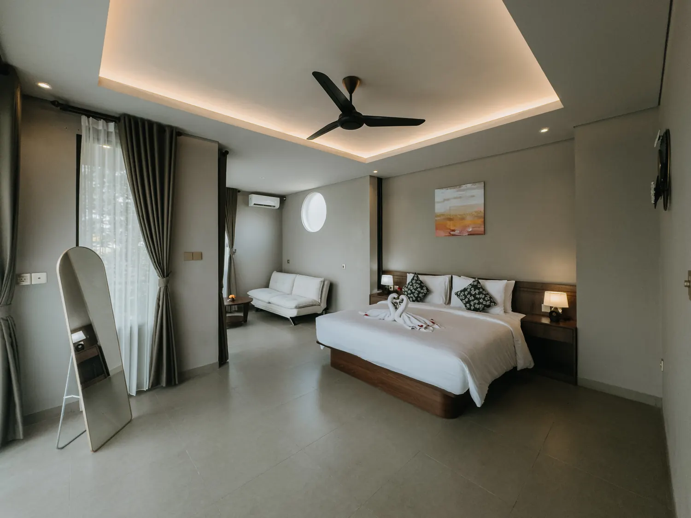
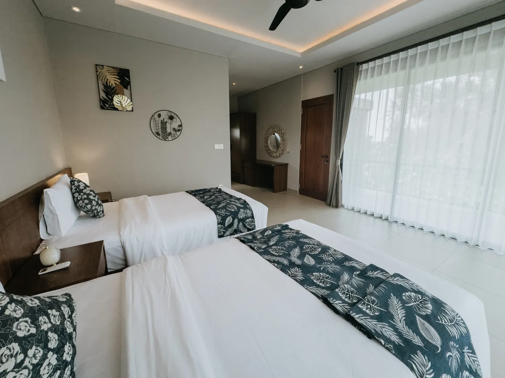

Bangun dengan hijau tropis
Jendela besar dan balkon mengarahkan pandangan ke pepohonan, taman, dan ritme desa Mas yang tenang.

Private Pool Villa in Ubud
Retreat 2 kamar tidur di Gianyar, Ubud untuk tamu yang mencari suasana alam, ruang modern, dan ketenangan Bali yang terasa privat.
Nusari Villa memadukan arsitektur modern minimalis dengan lanskap tropis khas Ubud. Dari pool deck, balkon, hingga living room, suasananya dibuat tenang dan lapang untuk staycation, perjalanan keluarga kecil, atau work-from-villa yang lebih pelan.
Lokasinya berada di Mas, desa budaya yang tetap dekat dengan atraksi Ubud, namun cukup tersembunyi untuk memberi rasa privat begitu Anda masuk ke area villa.


Jendela besar dan balkon mengarahkan pandangan ke pepohonan, taman, dan ritme desa Mas yang tenang.
Kolam renang, sun deck, dan living terbuka menjadi pusat pengalaman tanpa harus keluar dari villa.
Akses praktis menuju area budaya, restoran, dan destinasi keluarga, sambil tetap pulang ke suasana yang sunyi.

Pool deck yang intim untuk berenang pagi, membaca, atau menikmati sore dengan suasana taman tropis.

Living, dining, dan dapur menyatu dengan bukaan besar agar cahaya dan udara terasa natural.

Area duduk di kamar memberi momen tenang sebelum memulai hari di Ubud.


Dua kamar tidur ber-AC, living room, dining area, dapur lengkap, dan area outdoor privat. Komposisinya nyaman untuk keluarga kecil, pasangan, atau tamu yang ingin tinggal lebih lama di Ubud.
Foto asli villa: exterior, kamar, living area, pool deck, dan pemandangan sekitar.
Berada di area Mas, Gianyar, Nusari Villa cocok untuk tamu yang ingin dekat dengan Ubud, namun tetap kembali ke suasana yang lebih privat dan natural.
Nusari VillaKirim tanggal menginap dan jumlah tamu. Tim kami akan membantu cek ketersediaan, harga, dan kebutuhan tambahan Anda.